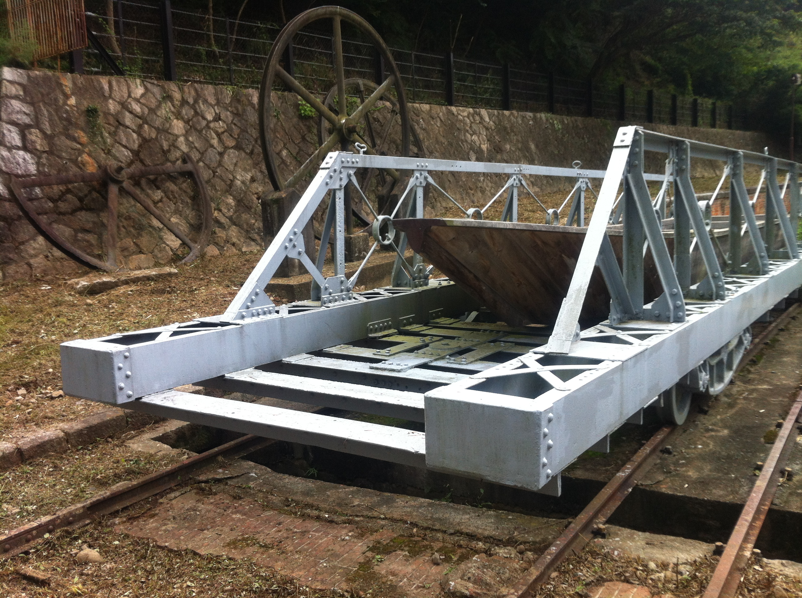

 蹴上インクライン 蹴上インクラインは、京都市左京区にある歴史的な鉄道の跡地です。 かつて、琵琶湖疏水の一区間をなしており、蹴上発電所の電力で多くの船を運びました。 現在は散策路として整備されており、多くの観光客が訪れます。 詳しく見る 清水寺 清水寺は、京都市東山区にある歴史的な寺院です。 この寺は、世界文化遺産に登録されています。 清水寺の本堂は、舞台からの眺めが美しく、季節を問わず多くの観光客が訪れます。 詳しく見る